역사 답사 기록 · 서울 성북구
조선 건국의 꿈이 무너진 자리 — 가장 아기자기한 능에 가장 무거운 이야기가 있었다
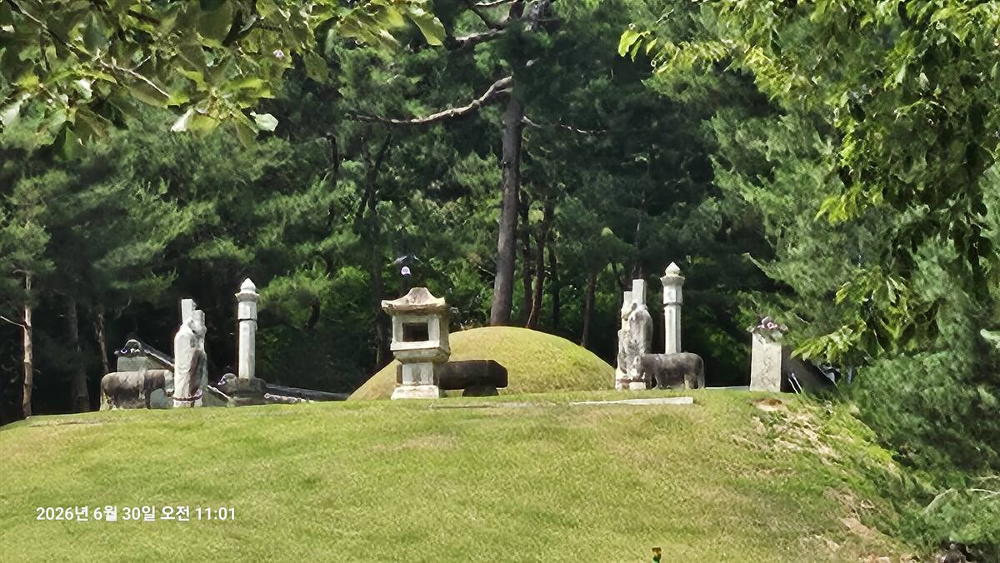
Prologue
경복궁에서 나라의 꿈을 완성한 태조에게도, 끝내 채우지 못한 자리가 하나 있었다. 그가 그토록 사랑했던 여인은 따로 묻혀 있다. 신덕왕후 강씨, 조선 최초의 왕비. 그녀의 능 정릉을 다녀왔다. 능제는 갖출 것을 다 갖췄지만 규모가 작고 아기자기했다. 그런데 그 작음이 오히려 더 많은 것을 말해주는 능이었다. 이 능에서는 풍수보다, 석물의 크기보다, 한 인간의 상실이 먼저 읽혔다.
Scene 01
1396년. 종묘와 경복궁이 완공된 바로 다음 해, 조선 왕조가 가장 먼저 지은 무덤은 왕의 능이 아니라 왕비의 능이었다. 신덕왕후가 세상을 떠나자 태조는 직접 능지를 정했다. 건원릉보다 12년 빠르다. 정릉은 조선 최초의 왕릉이다.
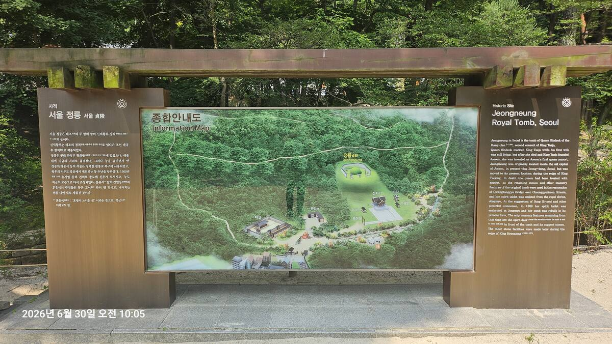
정릉 입구의 종합안내도(Information Map). 재실·금천교·홍살문·정자각·비각·능침까지 전체 배치가 한눈에 들어온다. 10:05
태조가 처음 능을 만든 자리는 지금의 정동, 경복궁에서 매우 가까운 도성 한복판이었다. 왕릉으로는 이례적으로 가까운 거리. 좌청룡 우백호의 포국도 충분치 않은 협소한 자리였다. 그런데도 태조는 그곳을 골랐다. 풍수보다 마음이 앞섰다는 뜻이다. 살아서도 곁에 두었던 여인을, 죽어서도 아침저녁 곡소리가 들리는 거리에 두고 싶었던 것이다.
그러나 지금 우리가 보는 정릉은 그 정동의 정릉이 아니다. 1409년 태종이 도성 밖, 지금의 성북구로 옮겼다. 봉분도 새로 쌓았고 석물도 일부만 옮기고 나머지는 버렸다. 정자각과 홍살문도 새로 지었을 가능성이 크다. 조선 최초의 왕릉은 사라졌고, 우리가 보는 것은 정치적으로 다시 만들어진 '두 번째 정릉'이다.
Scene 02
이 능을 제대로 이해하려면 한 여인의 생애를 5막짜리 비극으로 읽어야 한다.
정릉의 서사 — 사랑과 정치의 5막
우리는 정릉에서 왕비의 무덤을 보는 것이 아니다. 이곳에서 조선 건국의 꿈과 한 인간 이성계의 가장 깊은 상실을 본다. 그리고 그 상실은 결국 회암사와 건원릉으로 이어진다.
— 정릉 답사 자료 중에서이 작은 능이 그 모든 상실 이야기의 출발점이다. 정릉은 태조가 왕위를 내려놓고 향했던 회암사로 가는 길의, 시간상으로는 가장 앞선 정거장이다.
Scene 03
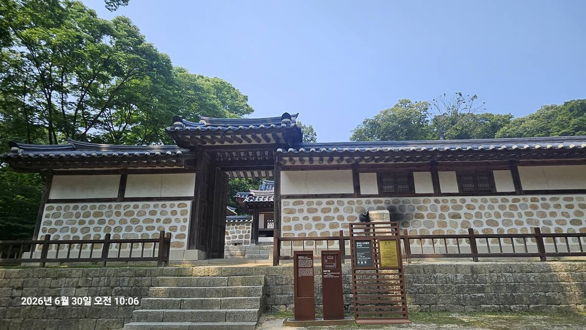
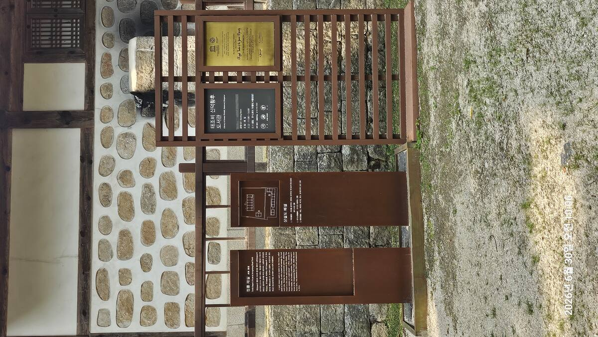
능에 들어서기 전, 재실(齋室)을 먼저 만났다. 제향을 모시기 전 관원들이 의관을 정제하고 마음을 가다듬던 공간. 2013년 발굴되어 2014년 복원됐다고 안내판에 적혀 있다. 한 번 불에 타 사라졌던 건물이 다시 세워진 것이다.
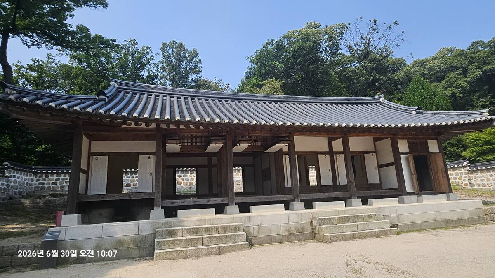
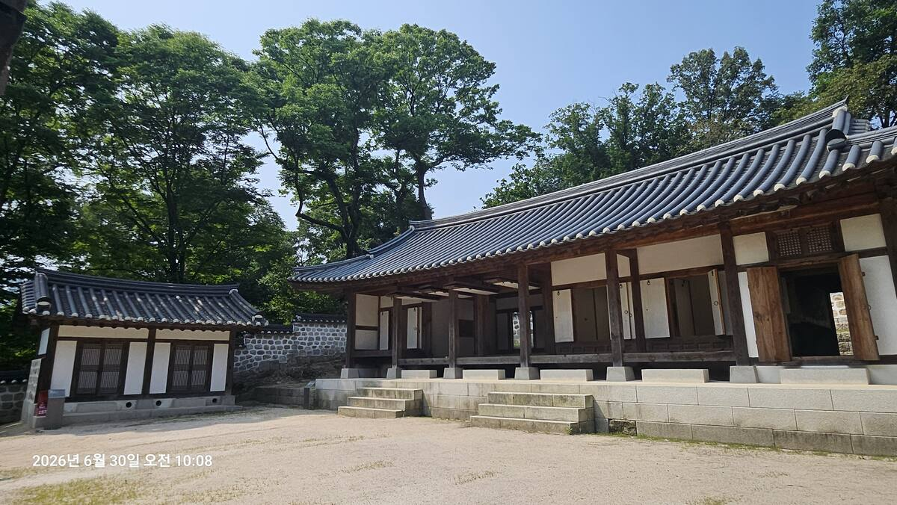
흥미로운 점은 이 재실이 지금 '태조비 신덕황후 도서관'으로 운영되고 있다는 것이다. 제향을 준비하던 공간이 책을 읽는 공간으로 바뀌었다. 600여 년 전 권력에서 밀려났던 왕비의 이름이, 지금은 동네 아이들이 책을 빌리러 오는 도서관 간판에 적혀 있다. 역사의 아이러니가 이런 식으로도 작동한다.
Scene 04
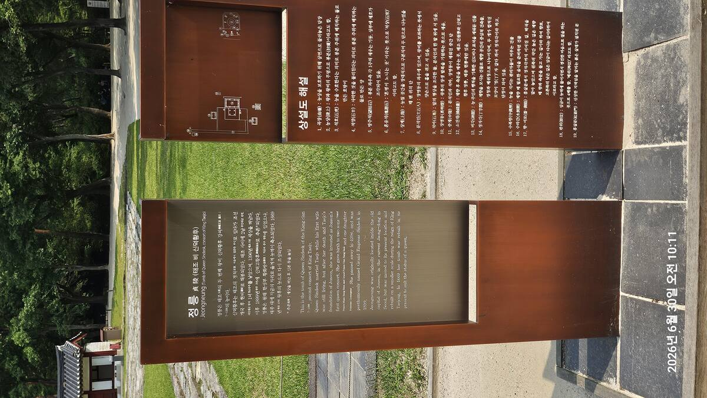
정릉 안내판(국영문)과 상설도 해설. 10:11
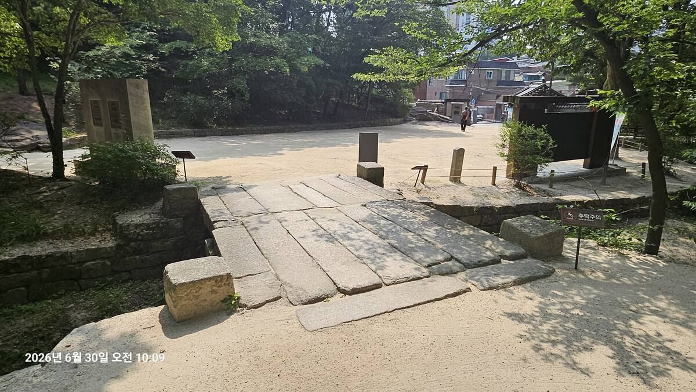
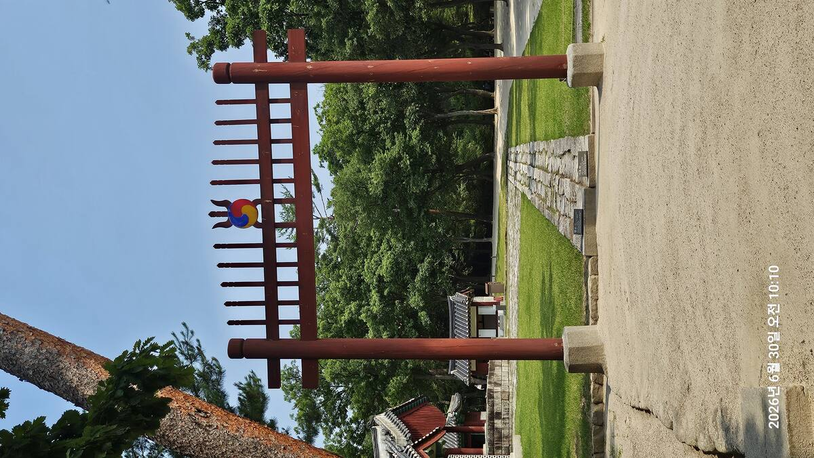
금천교를 건너 홍살문을 지났다. 참도, 정자각, 능침으로 이어지는 조선 왕릉의 기본 구조가 여기서도 그대로 작동한다. 다만 규모가 다르다. 이후 답사하게 될 건원릉의 광활함과 비교하면 정릉은 아담하다. 참도도 짧고 정자각도 작고 능침까지의 거리도 멀지 않다.
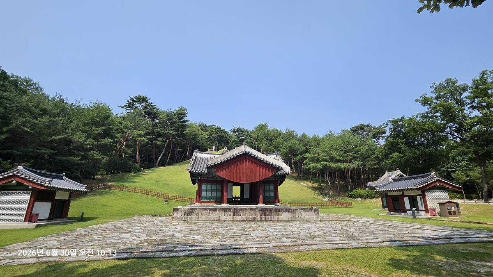
정자각(丁字閣). 제향을 모시는 중심 건물로, 건원릉의 정자각보다 작은 규모이지만 기본 구조는 동일하다. 10:13
이 작음이 의미심장하다. 같은 시대, 같은 왕의 부인이지만 정릉은 건원릉만큼 웅장하지 않다. 태종이 천장하면서 능역을 축소했기 때문이다. 왕릉의 격식은 갖추되 규모는 줄인다 — 이것이 정치적 메시지였다. 신덕왕후를 완전히 지우지는 않되, 그 위상은 분명히 낮춘다는 뜻.
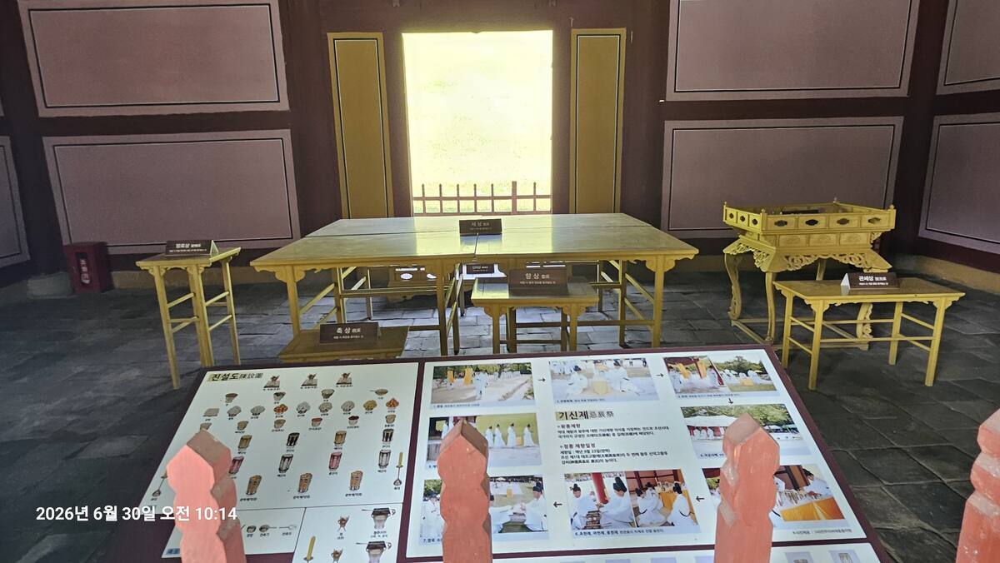
정자각 내부에 전시된 진설도(陳設圖)와 기신제 절차 사진. 매년 9월 23일(음력) 기신제향이 거행된다. 10:14
정자각 안에는 진설도와 기신제 절차 사진이 전시되어 있었다. 제상, 향상, 축상이 놓인 자리가 표시되어 있고, 옆에는 흰 옷을 입은 제관들이 절을 올리는 사진들이 걸려 있다. 600여 년 전 권력에서 밀려난 왕비를 위해, 지금도 매년 가을 정식 제사가 올려진다.
Scene 05
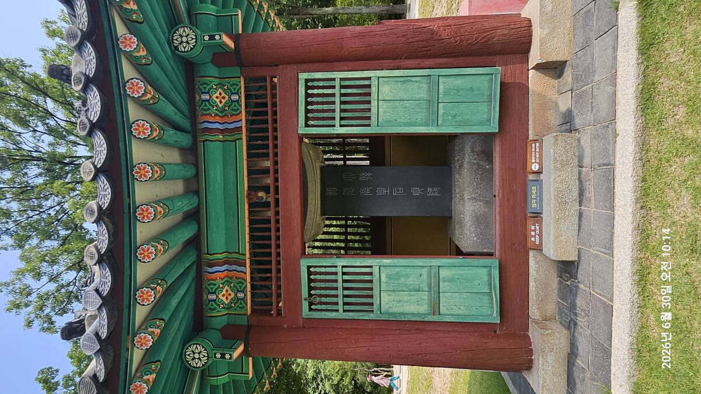
비각(碑閣) 내부. 신덕왕후의 행적을 기록한 비석이 모셔져 있다. 정자각 곁의 작은 사당이다. 10:14
비각 안 비석에는 신덕왕후의 사적이 새겨져 있다. 정자각보다 작고 단출한 이 건물 하나가 능 전체의 격을 다시 한 번 말해준다. 건원릉에서도 이와 비슷한 이야기 구조를 가진 비석 두 개를 만나게 된다. 조선 왕에서 대한제국 황제·황후로 — 시대가 바뀌어도 무덤은 그 자리에서 호칭을 바꿔가며 존재를 증명한다.
정릉을 둘러싼 철학적 질문 — 테세우스의 배
1409년 태종의 천장은 봉분만 옮긴 것이 아니었다. 유해와 재궁은 옮겼지만, 봉분은 새로 쌓았고, 석물은 일부만 가져오고 나머지는 청계천 광교 축조에 썼다. 홍살문과 정자각도 새로 지었을 가능성이 높다.
피장자는 같지만 위치도 다르고 공간 구성도 다르고 석물도 다르고 건축물도 후대의 것이다. 그렇다면 이것은 같은 정릉인가, 다른 정릉인가. 부품을 하나씩 교체해도 같은 배라고 할 수 있는가 — 그 오래된 철학적 질문이 이 작은 능 앞에서 다시 떠올랐다. 정릉은 조선의 정릉이면서 동시에 태종이 다시 만든 정릉이다.
Scene 06
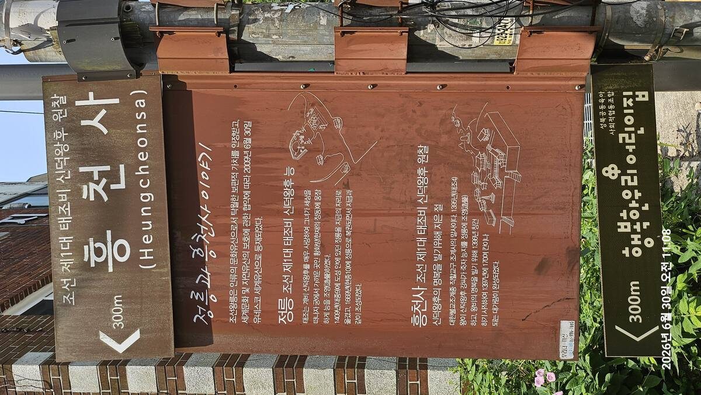
흥천사 입구의 '정릉과 흥천사 이야기' 안내판. 정동에서 현재 자리로 옮겨진 능의 역사가 정리되어 있다. 11:08
정릉을 나와 흥천사로 향했다. 흥천사는 신덕왕후의 명복을 빌기 위해 태조가 직접 창건을 명한 원찰(願刹)이다. 1396년 능을 조성하자마자 짓기 시작해 1397년에 완공됐는데, 그 규모가 무려 1,700여 칸이었다고 한다. 한 여인을 위한 절치고는 상상하기 어려운 규모다.
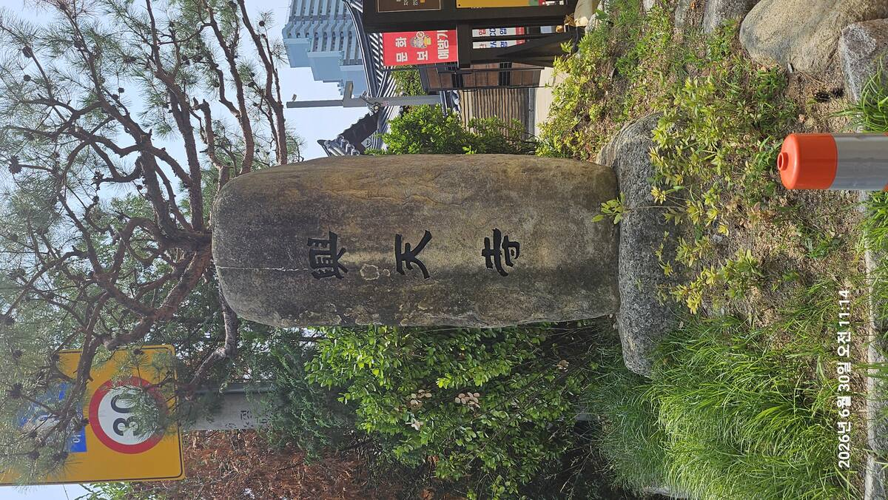
흥천사(興天寺) 표석. 도심 빌딩이 절 바로 뒤에 보인다. 11:14
태조는 정릉이 보이는 곳에 흥천사를 짓고, 매일 아침저녁으로 절의 종소리를 들으며 아내를 그리워했다고 전해진다. 실제로 태조는 정릉 인근에 자주 행차해 흥천사에서 재를 올리게 했다는 기록이 남아 있다. 사랑 하나가 도성 안에 거대한 사찰 하나를 세운 셈이다.
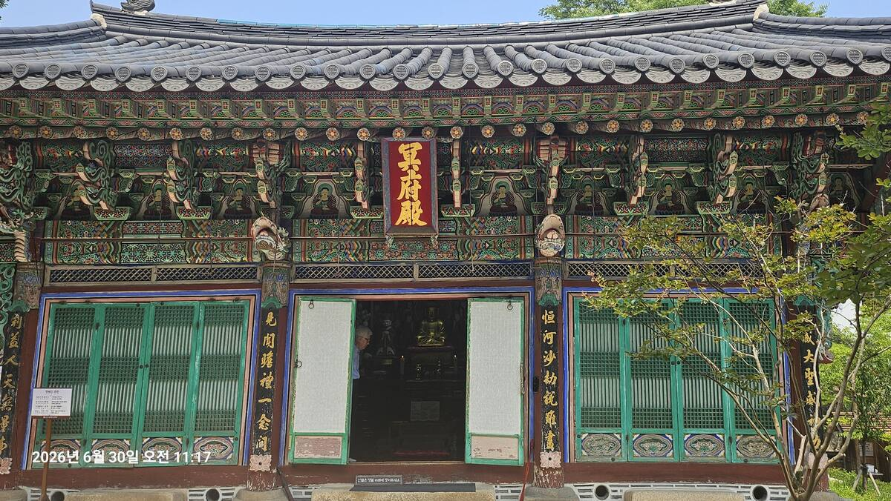
명부전(冥府殿). 화려한 단청과 불상이 좁은 마당 안에서도 위엄을 잃지 않는다. 11:17
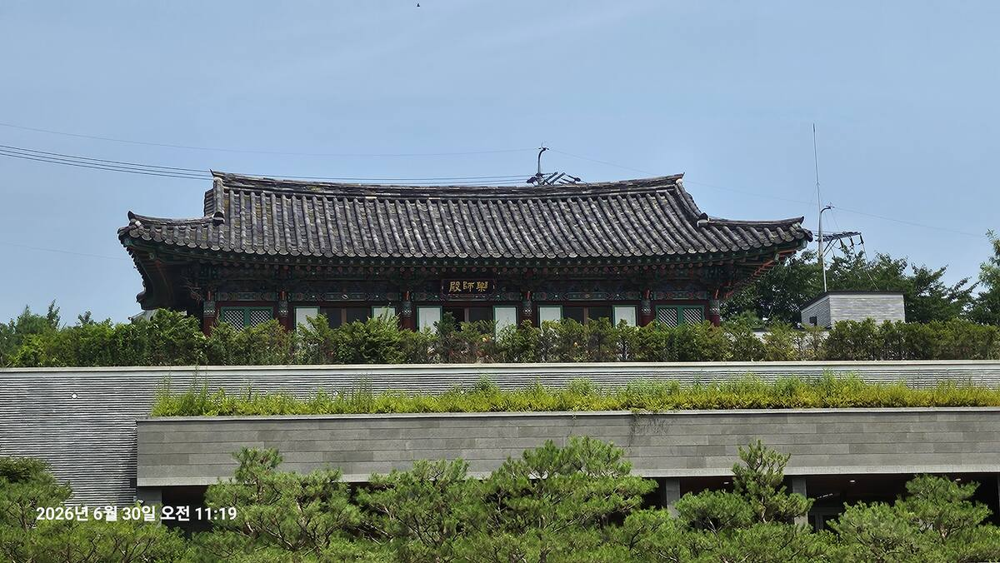
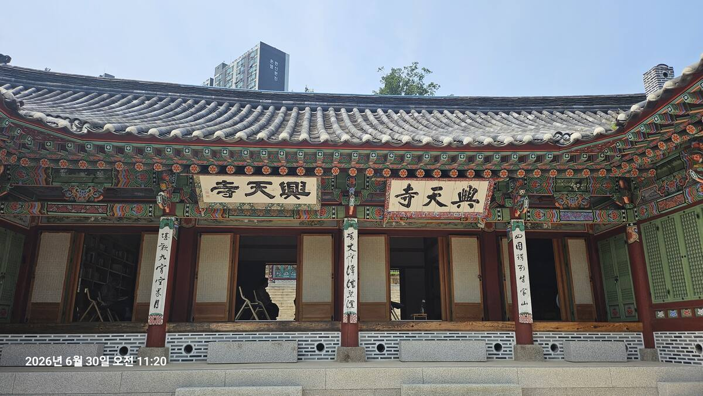
흥천사는 임진왜란과 화재를 거치며 원래의 1,700칸 규모를 모두 잃었다. 지금 남은 건물들은 후대에 다시 지어진 것들이다. 그래도 도심 한복판, 고층 아파트 사이에서 검은 기와지붕과 단청을 지키고 있는 모습이 인상적이었다. 절의 몸집은 줄었지만 존재 이유 — 신덕왕후의 명복을 빈다는 그 처음의 목적 — 는 아직 남아 있다.
정릉이 권력에 밀려난 왕비의 무덤이라면, 흥천사는 그 왕비를 끝까지 사랑했던 한 남자의 마음이다. 능이 정치의 기록이라면, 절은 감정의 기록이다.
— 답사를 마치며Closing
정릉은 능제로만 보면 평이하다. 홍살문, 참도, 정자각, 비각, 능침 — 조선 왕릉의 기본 틀에서 벗어나지 않는다. 오히려 규모는 건원릉보다 작고 아기자기하다. 풍수로 보아도 "천하대지"라는 거창한 수식어가 따라붙지 않는 무난한 자리다.
그런데 이 답사에서 가장 오래 남는 것은 능제도, 풍수도 아니었다. 한 여인이 살아서 가장 사랑받았고, 죽은 뒤 가장 매섭게 추락했다가, 260년 만에 다시 황후로 복권된 그 곡선이었다. 정동에서 성북구로, 왕비에서 폐서인급으로, 다시 황후로 — 같은 사람의 무덤이 세 번 다른 신분으로 불렸다.
정릉에서 본 작은 능과, 그 곁에 지어졌던 거대한 원찰 흥천사. 이 낙차 자체가 하나의 이야기를 들려준다. 사랑하는 사람을 먼저 보내고, 아들들을 잃고, 끝내 권력까지 빼앗긴 한 노인의 생애 — 그 상실은 정릉에서 끝나지 않는다.
사랑을 잃은 자리에서, 왕위마저 내려놓아야 했다. 쫓겨난 늙은 왕이 향한 곳은 궁궐이 아니라 산사였다. 그 산사가 회암사였다.
답사 정보 / Visitor Info